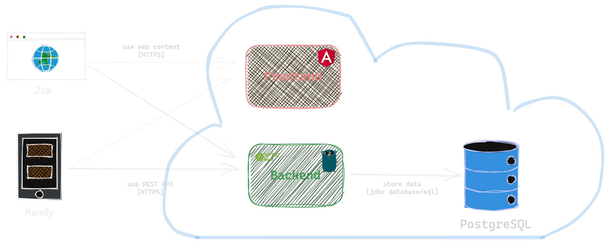

Cutting through Cloud-Native Complexity
... with Rock, Paper, Scissors
ppi-x.gitlabpages.ppidev.net/talks/soko-23-rock-paper-scissors
Was ist cloud-native?
→ Was ist die Cloud?
- Platform as a Service (PAAS)
- Platform as a Service (PAAS)
- Infrastructure as a Service (IAAS)
- Software as a Service (SAAS)
- Platform as a Service (PAAS)
- Infrastructure as a Service (IAAS)
Was ist die Cloud?
Platform as a Service
Was ist die Cloud?
Platform as a Service
→ Was ist cloud-nativ?
Was ist die Cloud?
Platform as a Service
→ Was ist cloud-nativ?
→ Was ist cloud-ready?
Was ist die Cloud?
Platform as a Service
→ Was ist cloud-nativ?
→ Was ist cloud-ready?
Anwendungen geeignet für PAAS
Was ist die Cloud?
Platform as a Service
→ Was ist cloud-nativ?
→ Was ist cloud-ready? ✓
Anwendungen geeignet für PAAS
Warumcloud-native?
Wie sieht es ohne aus?
- Rechenzentrum / Hardware / Server
- Eigenes Deployen der Anwendung
- zeitaufwändig
- fehleranfällig
- fehlende Vorhersagekraft
- hohe Downtimes
Wie sieht es ohne aus?
- Rechenzentrum / Hardware / Server
- Eigenes Deployen der Anwendung
- zeitaufwändig
- fehleranfällig
- fehlende Vorhersagekraft
- hohe Downtimes
- Hohe Time To Market
- Keine Lastskalierung
- Kosten auch bei Nicht-Gebrauch
- Kein Fokus allein auf Anwendung
Warumcloud-native?
- Skalierbar
- Kurze Time To Market
- Resilienz
- Beobachtbarkeit
Warumcloud-native?
- Skalierbar
- Kurze Time To Market
- Resilienz
- Beobachtbarkeit
... kein Begeisterungsfaktoren mehr, sondern Standard
Cloud-native in der Entwicklung?
Cloud-native in der Entwicklung?
Cloud-native in der Entwicklung?
The 12-Factor-App and Beyond
- One Codebase, One App
- API First
- Dependency Management
- Design, Build, Release, Run
- Configuration, Credentials and Code
- Logs
- Disposability
- Backing Services
- Environment Parity
- Administrative Processes
- Port Binding
- Stateless Processes
- Concurrency
- Telemetry
- Authentication and Authorization
Example: Rock, Paper, Scissors API

Middleware for Logging and Recovery
Using middlewares from chi router or others.
r := chi.NewRouter()
r.Use(middleware.Logger)
r.Use(middleware.Recoverer)
- What does the recovery middleware do?
- Bonus: How can you set a request timeout using middleware?
Back to Factors
Configure Port
from Environment Variable
Using the Standard Library
func main() {
http.ListenAndServe(fmt.Sprintf(":%v", os.Getenv("PORT")), r)
}
Using envconfig
github.com/kelseyhightower/envconfig
// Application Configuration
type Config struct {
Port string `envconfig:"PORT" default:"8080"`
}
func main() {
http.ListenAndServe(fmt.Sprintf(":%v", c.Port), r)
}
Back to Factors